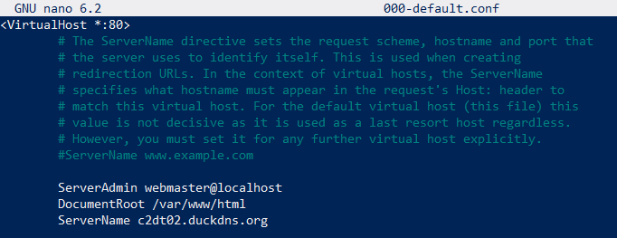

Instalação e Configuração
Contents
Instalação e Configuração#
Para criar uma wiki sua, é necessário instalar e configurar o MediaWiki. Para isso, basta seguir o próprio guia de instalação, que explica sobre
Requisitos de instalação#
São necessários:
Um web server
PHP para suportar o MediaWiki
Um software de base de dados
A WMF recomenda usar
Web server: Apache
Software de DB: MariaDB
Assim, esses todos, mais o PHP, podem ser instalados em um servidor Linux com a linha de comando
sudo apt-get install php php-apcu php-intl php-mbstring php-xml php-mysql php-calendar mariadb-server apache2
onde sudo é o comando do Linux que permite a um usuário normal do computador executar ações que precisam de privilégios mais altos, apt-get é um comando que serve para gerenciar pacotes do Linux, install significa que você está instalando um pacote e os outros termos a seguir são os pacotes que você instalará.
Para o Apache funcionar corretamente com HTTPS, é bom usar o comando
sudo ufw allow 'Apache Full'
onde ufw é o comando para gerenciar o firewall do ubuntu e allowdá permissão completa para o Apache por meio do firewall do servidor, incluindo para requisições HTTPS.
Ainda, pode ser útil instalar também no servidor o ImageMagick e o TeX:
sudo apt-get install imagemagick texlive
Baixando o software do MediaWiki#
Para baixar o software, basta ir na página da lista no topo da página e baixar o arquivo compactado.
Extraindo o software do MediaWiki#
Para extrair (descompactar) os arquivos do software, basta usar
tar -xf mediawiki-*.tar.gz
onde tar (Tape ARchiver) é um comando para descompactar arquivos, -xf é o modo de operação, no qual o x indica que o tar deve extrair um arquivo e o f indica que você está especificando qual arquivo deve ser manipulado. Por fim, mediawiki-*.tar.gz é o nome do arquivo compactado que você baixou, com a diferença de que o arquivo baixado possui, no lugar do asterisco, a versão do software, mas não é necessário especificar essa versão no comando, basta deixar o asterisco.
Fazendo o upload dos arquivos para o web server#
Cada software de web server especifica de uma forma diferente em qual diretório os arquivos do site (ou dos sites) devem estar, bem como as outras configurações do servidor. No caso do Apache, há um arquivo de configuração principal chamado apache2.conf ou httpd.conf (depende do OS). Ainda, há uma pasta chamada sites-available com um arquivo 000-default.conf que possui configurações para cada site que está naquele web server.
Local do arquivo 000-default.conf:
Conteúdo do arquivo 000-default.conf, com a diretiva DocumentRoot, no qual devem estar os arquivos do site:

No caso, o diretório raiz do site está configurado como /var/www/html e o nome do servidor como c2dt02.duckdns.org, então ao colocar um arquivo chamado exemplo.pdf dentro desse diretório, ele poderá ser acessado como c2dt02.duckdns.org/exemplo.pdf e, ao colocar nesse diretório a pasta descompactada do MediaWiki, por exemplo com o nome wiki, a wiki será acessível em www.exemplo.com/wiki/
É importante lembrar que, para a wiki ser acessível pela internet, não basta ter um servidor com o MediaWiki instalado, é necessário também possuir um domínio, como o c2dt02.duckdns.org.
Configure a base de dados#
Antes de instalar o MediaWiki, é necessário configurar a base de dados que será usada pelo MediaWiki.
Se você estiver em um novo servidor em que acabou de instalar o MariaDB, então pode ser necessário primeiro configurar a senha root.
Em seguida, já estando no MariaDB, pode-se, por exemplo, criar uma base de dados chamada my_wiki e um usuário wikiuser:
CREATE DATABASE my_wiki;
CREATE USER 'wikiuser'@'localhost' IDENTIFIED BY 'database_password';
GRANT ALL PRIVILEGES ON my_wiki.* TO 'wikiuser'@'localhost' WITH GRANT OPTION;
Execute o script de instalação#
Com os requisitos instalados e colocados no devido diretório e a base de dados criada, pode-se de fato instalar o software do MediaWiki. Para isso, basta acessar o site, seja por meio do domínio (caso haja) ou diretamente pelo localhost. O script de instalação perceberá que não há o arquivo de configuração do MediaWiki (LocalSettings.php) e pedirá que a wiki seja configurada primeiro (clicar no hiperlink).
Configuração adicional#
Certificado SSL#
Inicialmente, é importante conseguir um certificado SSL para o site, para que possa ser usado protocolo HTTPS. Pode ser utilizado um certificado gratuito do Let’s Encrypt. Depois de conseguir o certificado, é importante alterar o LocalSettings para pôr o https no $wgServer.
Skin#
A skin pode ser alterada para, por exemplo, a MinervaNeue.
$wgDBServer#
Há uma propriedade no LocalSettings.php chamada $wgDBServer, configurada inicialmente para localhost. É bom mudar o valor para 127.0.0.1, pois isso torna a wiki bem mais rápida.
Extensões#
É importante instalar as extensões necessárias.
Templates#
É importante importar os templates necessários.